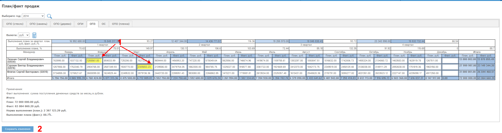
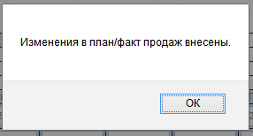

При наличии у Вас прав Вы можете редактировать план/факт продаж.
План продаж вносится и редактируется прямым изменением полей для всех отделов.
Факт продаж для отделов ОПО камень, стекло, дерево - вносится с помощью кнопки "+" возле соответствующего поля. Это приводит к созданию и утверждению договора в разделе "Договора и приложения".
Для корректировки суммы факта продаж необходимо добавить, или аннулировать соответствующие договора, либо скорректировать суммы договоров в разделе "Договора и приложения".
Для других отделов факт продаж вносится и редактируется прямым изменением полей.
После проведения всех изменений необходимо нажать кнопку "Сохранить изменения".
Пример. Скорректируем план/факт продаж по отделу ОПЗ:

Измененные поля выделены цветом (1).
Нажмем кнопку "Сохранить изменения" (2). Программа выдаст сообщение об изменении и обновит план/факт продаж:
